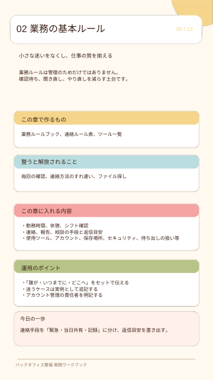

サロンオーナー・運営責任者の方へ
その確認、
いつまでオーナーが
対応しますか？
日々の業務を、
「聞かないと分からない」から
「見れば分かる」へ。
サロンバックオフィス
マニュアル
業務ルール・経理・労務・情報共有など、
店舗運営の土台を整える10項目を一冊に。
まずは、気になる業務を一つ見直すところから。
PROBLEM
こんな「毎日の小さな負担」、
ありませんか？
- 同じ質問に、何度も答えている。
- ルールや資料がチャットに埋もれている。
- 担当者が休むと、業務が止まってしまう。
- 入退社や勤怠の手続きを、その都度確認している。
- 整えたいけれど、何から始めるか分からない。
必要なのは、すべてを自分で覚えることではなく、誰でも確認できる形に残すこと。
FREE GUIDE
頭の中の「当たり前」を、
チームで使える手順へ。
この資料は、バックオフィス業務を整理するための実践ガイドです。各章に「入れる内容」「運用のポイント」「今日の一歩」を掲載しています。
整えるべき項目が分かる
基本情報からトラブル対応まで、業務を10項目で見渡せます。
残すべきルールが分かる
担当・期限・保管場所など、手順を言葉にする視点を整理できます。
今日やることが見つかる
章ごとの「今日の一歩」を参考に、小さく着手できます。
CONTENTS
バックオフィスの土台を、
10項目で整理。
- 01会社概要・基本情報
- 02業務の基本ルール
- 03日常業務の流れ
- 04経理・会計関連
- 05人事・労務関連
- 06社内コミュニケーション
- 07顧客対応・営業サポート
- 08契約・法務関連
- 09トラブル対応・よくある質問
- 10その他・付録
※各章は、店舗の実際のルールに合わせて活用するための整理項目です。
INSIDE THE GUIDE
中身を、少しだけ。
「業務の基本ルール」の章では、連絡手段・返信目安・使用ツール・保存場所など、日々の迷いを減らす項目を整理します。

最初から完璧でなくて大丈夫。資料「この冊子の使い方」より
気になる章から始めて、実際に困ったことが起きたときに追記する。そんな使い方を前提にした一冊です。
HOW TO USE
読むだけで終わらせない、
4つの活用ステップ。
- 現状を集める
資料・チャット・口頭のルールを一か所へ。
- 最小単位で書く
「誰が・いつ・何を・どこに残すか」を一文に。
- 実際に使う
新人や別担当が、同じ手順で実行できるか確認。
- 月1回見直す
変わったルールや、よくある質問を更新。
FAQ
よくあるご質問
何から整えればよいか分からなくても使えますか？
はい。まずは10項目を見渡し、問い合わせが多い業務や、止まると困る業務を一つ選んでみてください。
すべての章を一度に取り組む必要はありますか？
ありません。気になる章から始め、運用しながら少しずつ追記する使い方をおすすめしています。
資料の形式を教えてください。
PDF形式です。各章の整理項目を参考に、ご自身の店舗のルールや手順をまとめるためにお使いいただけます。
LINE DOWNLOAD
オーナーが抱える業務を、
一つずつ、チームの仕組みに。
LINEに友だち追加して、
サロンバックオフィスマニュアルを
無料で受け取る